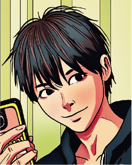
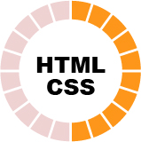
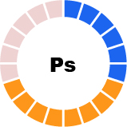
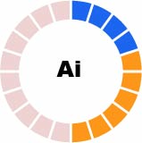
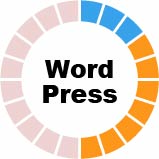
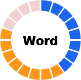
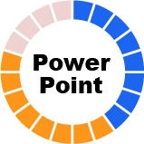
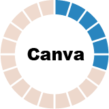
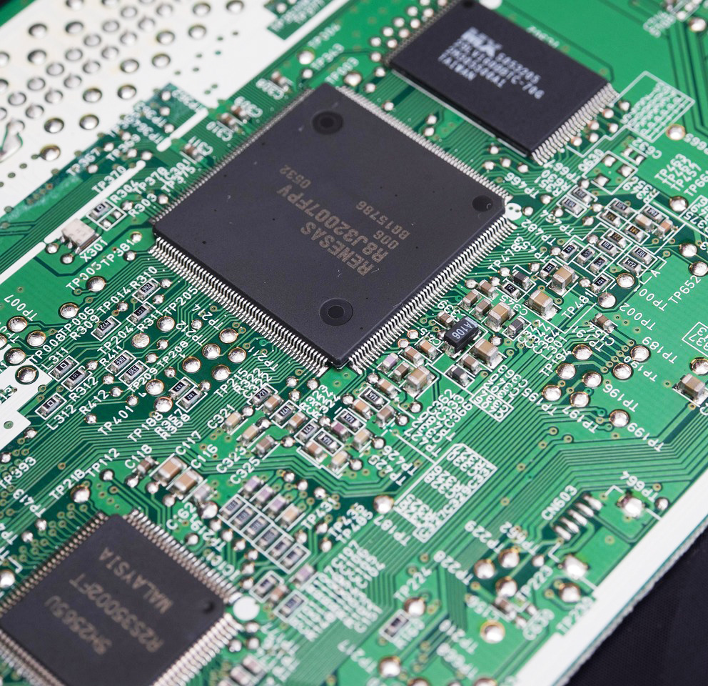

About me

Ryoko Ohta
埼玉県川口市出身。大学で電子工学を専攻した後、半導体メーカーにて約8年間勤務しました。製造現場でのデータ測定や解析、資料作成を通じ、論理的な思考と正確に物事を進める基礎を築きました。
その後、写真への興味からブライダルアルバムの制作会社へ転身。写真編集の実務を通じて「デザインで想いを伝える楽しさ」を実感し、職業訓練にてWebデザインとコーディングの道を志しました。
性格と仕事への向き合い方
「真面目にコツコツと取り組む」ことが強みです。前職の事務や制作の現場でも、常に「もっと効率化できるところはないか」を探し、実行に移してきました。Web制作においても、保守性の高いコードを書くことや、作業の効率化を常に意識して取り組んでいます。
趣味・ライフスタイル
現在はクライミングに没頭しており、ジムや外岩でアクティブに活動しています。学生時代から体を動かすことが好きで、粘り強く目標（ルート）を攻略する楽しさは、プログラミングの課題解決にも通じると感じています。その他、映画鑑賞やドライブ、道の駅巡りなども楽しんでいます。
Works Web-site
| 制作種別 | 自主制作 |
|---|---|
| 使用ツール | HTML / CSS / GitHub Pages |
| 概要 | HTML5/CSS3を使用した地域団体を意識したサイト（レスポンシブ対応）。 |
| 制作の目的 | 団体の活動内容を分かりやすく伝え、新規参加者や問い合わせを増やすこと。 |
| 制作ポイント | 温かい雰囲気と地元発信の新しさを感じてほしく、見やすさを追求しました。 現在も運用のしやすさを考慮してブラッシュアップを継続中です。 |
| 制作種別 | 自主制作 |
|---|---|
| 概要 | WordPressを用いた山岳山荘の紹介・宿泊案内サイト。 |
| 制作目的 | 登山客が必要な情報（宿泊料金やアクセス）へスムーズに辿り着けるユーザビリティの実現。 |
| 制作ポイント | 職業訓練の課題として制作しましたが、コンセプト立案からコンテンツ構成まで、すべて自ら企画しました。 必要な機能を実装するため、プラグインの選定とカスタマイズを行い、情報の探しやすさにこだわりました。 |
| 制作種別 | 自主制作 |
|---|---|
| 使用ツール | HTML / CSS / GitHub Pages |
| 概要 | HTML5/CSS3を使用したカフェのブランドサイト（レスポンシブ対応）。 |
| 制作の目的 | 店舗のコンセプトである「落ち着いた空間」を視覚的に再現し、新規顧客の来店意欲を促すこと。 |
| 制作ポイント | メンテナンス性を考慮したコード作成を意識。 配色と写真の加工にこだわり、ブランドイメージを一貫して表現しました。 |
Works banner
Skills







- 前職
- 職業訓練
- 独学
- これから習得予定
HTML&CSS
レスポンシブデザインをもっと見やすくわかりやすくを習得予定です。保守しやすく、修正に強いコード作成を常に意識しています。
WordPress
既存テーマのカスタマイズから、プラグインの選定・導入まで対応可能。クライアントが更新しやすいサイト設計を目指しています。
Photoshop / Illustrator
写真編集の実務経験（約6年）をベースに、Web向けのバナー制作や素材加工、ロゴ制作など、目的に合わせたビジュアル作成が可能です。
Microsoft Office (Excel / Word / PPT)
前職の技術職・事務職で長年使用。データ解析やプレゼン資料作成など、正確さとスピードを両立した作業が得意です。
今後の展望
JavaScriptや各種フレームワークなど、ユーザー体験を高めるための技術を積極的に習得中です。
Career
Webデザイン関連（写真編集・画像作成 / 実務計約6年）
ブライダルアルバム制作、アプリ用クーポン画像作成。
写真の魅力を最大限に引き出す「レタッチ技術」と、ターゲットに響く「視覚的アプローチ」の実践経験です。
事務職（データ入力・マニュアル作成 / 約5年）
適応力を活かし、多様な環境で業務効率化を推進。
誰が見ても分かりやすい「情報整理（ドキュメント作成能力）」と、常に改善を探す「効率化の視点」を培いました。
技術職（半導体メーカー / 約8年）

電子機器の解析・評価、プレゼン資料作成。
複雑なデータを整理し、論理的に構築する「設計力」と「正確さ」の土台となりました。
ひとこと
最後までご覧いただき、ありがとうございます。
異業種からの挑戦ですが、これまでの技術職や事務職で培った「論理的思考」と「効率化へのこだわり」を、Web制作という新しいフィールドで活かしたいと考えています。
「わかりやすさ」と「ユーザー目線」を大切に、課題解決に貢献できる制作者を目指して、日々新しい技術の習得に邁進しています。